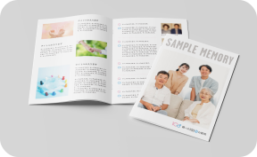
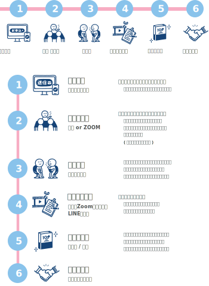

知ることで
“ 気づく” ( 築く )
あたたかい絆
知ることで
“ 気づく” ( 築く )
あたたかい絆


愛に包まれて この世に生を受け
感謝に包まれて いつかこの世を旅立つ
親子の数だけある
親とあなたの物語
ぼくのこと
わたしのこと
愛してた？愛してる？
知りたい
聞いてみたい
紡ぎたい想い
今ならできる
もつれた糸をほどくことも
切れた糸を結び直すことも
より強く太い糸にすることも
普段は恥ずかしくて
言えないけど
今、伝えたい
『大好きです』
親とあなたが繋がる
親への100(+1)の質問


とは？

「知ることで気づく（築く）あたたかい絆」をコンセプトに、あなたから親御さんへの100+1個の質問とその回答を、小冊子や動画に残すサービスです。
これまでの人生や価値観、交友関係、本心など、今だからこそ聞けること、今も恥ずかしくて聞けないこと、聞かなければ知り得ないことをこのサービスを通して聞くことで、あなたと親御さんの「今」そして「これから」をより豊かにしていただくお手伝いをいたします。
「親」は、産んでくれた、養ってくれた、学ばせてくれた、傍にいてくれた…など、どんな定義でも構いません。
あなたにとっての親御さんへ贈る、世界でたった一つの作品をお届けします。

家系図作成とは？
LIFE SIZE Designの家系図製作は、記録としての家系図ではなく、ご家族としてのつながりを感じられる家系図をご提案しています。 家系図はご先祖さまや自分が生きた証であり、過去（ご先祖様）・現在・未来（子孫）を繋ぐ大切な役割を果たします。 インタビューでわかる範囲での家系図製作はもちろん、行政書士による戸籍調査で過去にさかのぼることも可能です。

デザイン事務所だからこそご提案できる、飾れる家系図や持ち歩ける家系図、
ご先祖さまやご家族の写真やエピソードを盛り込んだデジタル家系図も魅力的です。
知ることで気づく（築く）あたたかい絆をぜひ体験してください。
このような方におすすめ
 自分のルーツを知りたい
自分のルーツを知りたい
親孝行をカタチにしたい
親の本当の気持ちを知りたい
恥ずかしいから親に聞いてほしい
過去から未来へ家族の絆を繋げたい

親の人生を残すつもりで申し込みましたが、質問するうちに自分も親へ伝えたい想いが溢れてきました。
親に今まで言えなかった本音をこの機会に伝えることができ、それが自分を癒すことにも繋がりました。


親の悩みや苦労の上に自分が存在していることを感じ、感謝と生きる自信をもらいました。
冊子を見ながら二人で昔話をすることが増えました。そんな姿を見て私も嬉しくなります。

お申し込みから納品まで


インタビューの流れ、対面、
電話、オンラインなど形式は
どのようになりますか？


流れ、対面、電話、オンラインなどの形式の説明・・・・
1回のインタビューの所要時間
や、全体のインタビュー期間に
ついて教えてください。
流れ、対面、電話、オンラインなどの形式の説明・・・・
具体的な質問例や質問内容の
範囲について知りたいです。
流れ、対面、電話、オンラインなどの形式の説明・・・・
親が協力的でない場合の対応方
法について教えてください。
流れ、対面、電話、オンラインなどの形式の説明・・・・
インタビュー後の内容編集や校正
サービスについて知りたいで
流れ、対面、電話、オンラインなどの形式の説明・・・・
制作期間について詳しく
知りたいです。
制作期間についての
説明・・・・
・・・・・・・・・・・・
家族の名前や生年月日、写真など具体的にどのような情報を含めることができますか。
制作期間についての
説明・・・・
・・・・・・・・・・・・
どの程度先祖を遡ることができるか、教えてください。
制作期間についての
説明・・・・
・・・・・・・・・・・・
家系図の更新や追加情報の反映について知りたいです。
制作期間についての
説明・・・・
・・・・・・・・・・・・
海外在住の家族の情報収集や反映方法について教えてください。
制作期間についての
説明・・・・
・・・・・・・・・・・・
社名
株式会社LIFE SIZE
リレーションデザイン事業
https://life-size.jp/
対応時間
平日１０:００ ~ １５:００
定休日
土日祝･夏季･年末年始･GW
※お問合せフォームからのご連絡は、24時間365日受付中です｡原則、1～3営業日以内にご返信いたします。ただし、営業時間外や休日にお問合せいただいた場合は翌営業日以降にご返信いたします。 あらかじめご了承ください。
商品購入利用規約 プライバシーポリシー＼Googleフォームよりお問い合わせください／